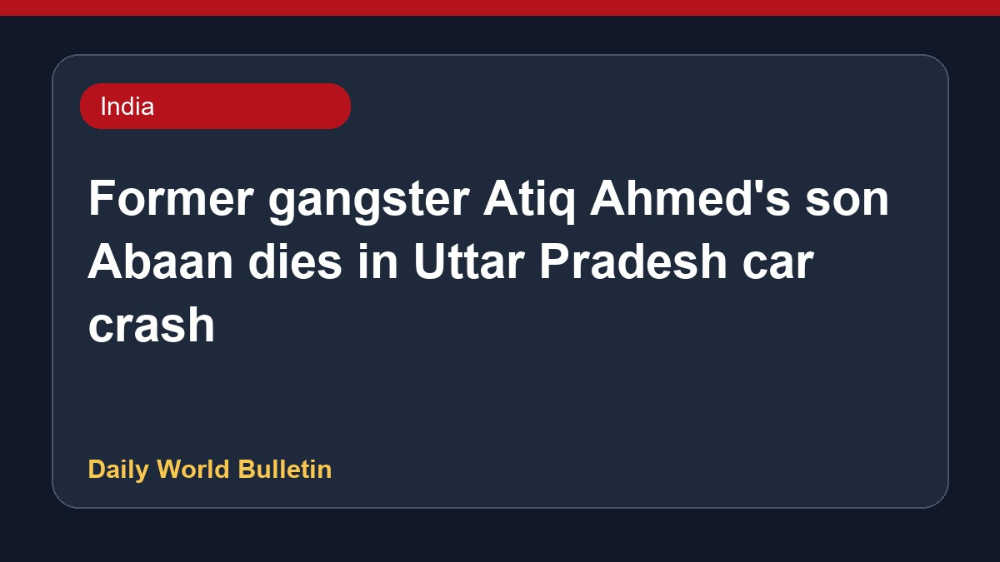

Former gangster Atiq Ahmed's son Abaan dies in Uttar Pradesh car crash

Abaan, the youngest son of former gangster-politician Atiq Ahmed, has died in a car crash in Jhansi, Uttar Pradesh. According to police reports, the vehicle collided with a divider following a momentary blackout experienced by the driver at high speed. Eyewitnesses recounted the tragic final words of the victim after the fatal collision. Authorities are currently investigating the circumstances surrounding the accident. Further details regarding the incident are limited at this stage.
Original source: India News Sources
Former gangster-politician Atiq Ahmed's son dies in car crash in UP's Jhansi - timesofindia.indiatimes.com ↗
Former gangster-politician Atiq Ahmed's son dies in car crash in UP's Jhansi - timesofindia.indiatimes.com ↗